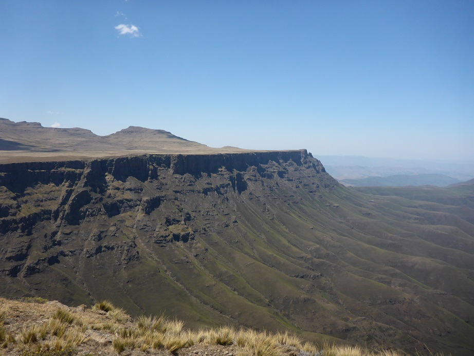

Personal
In my free time I like board games and getting outside. If I have lots of free time, I like to travel.
Some of my favorite places I've had the opportunity to visit are South Africa, Maleysian Borneo, Chile, and Australia. I've also done a little bike touring here in the US.
If you're into board games, my favorites are Gaia Project, Agricola, and Through the Ages for competitive games. For co-ops, I like Spirit Island, Space Alert, and Gloomhaven.
In the spirit of grad students sharing their favorite coffee shops (it's a thing), in Raleigh I'm a fan of Yellow Dog Bread Co. Global Village on Hillsborough St is quite good, too, as is Chanticleer if you're in SW Raleigh or Cary.